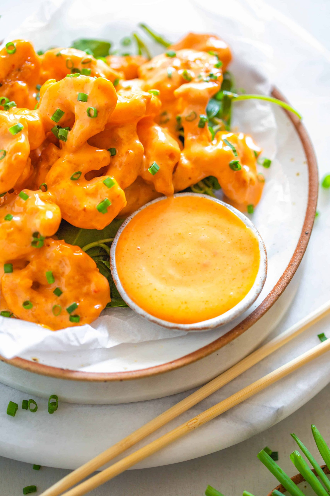

Dynamite Shrimp

What is Dynamite Shrimp?
It is a Japanese appetizer comprising of battered shrimp coated in a mixture of mayonnaise and sriracha sauce. This dish is also a very popular item on PF Chang's menu, which is an Asian restaurant in America and has its branches all around the world.
Ingredients:
- 250 g shrimp (shelled and deveined)
- oil
- 1/4 teaspoon red chili powder
- 1/2 teaspoon paprika powder
- 1/4 teaspoon salt
- 1 tablespoon soy sauce
- 1 small egg
COATING
- 1/2 cup all-purpose flour
- 1/4 cup cornflour/cornstarch
- 1 teaspoon garlic powder
- pinch of salt
SAUCE
- 1/2 cup mayonnaise
- 2-3 tablespoon sriracha sauce
- 2 tablespoon honey
- 1 1/12 tablespoon tomato ketchup
GARNISH
- lettuce
- spring onions or chives (chopped)
- black sesame seeds
- white sesame seeds
Steps:
- Prepare the sauce by stirring mayonnaise, sriracha sauce, honey and tomato ketchup together and keep aside.
- To the shrimp, add red chili powder, salt, paprika powder, soy sauce and egg. Mix well.
- Prepare the dredging mix by combining all-purpose flour, cornflour/cornstarch, salt and garlic powder.
- Heat oil for deep-frying.
- Using a tong, coat each shrimp with the flour, shake off excess and drop in the hot oil.
- Fry on medium high heat till it turns golden and crispy (around 3-4 minutes).
- Remove into a sieve to drain off excess oil. Let cool slightly.
- Add the fried shrimp to a bowl. Pour the sauce and toss until the shrimps are nicely coated.
- In a small bowl or glass put some lettuce on the bottom, add the shrimps and garnish with chopped green part of spring onion (or chives), black and white sesame seeds.
- Serve immediately!